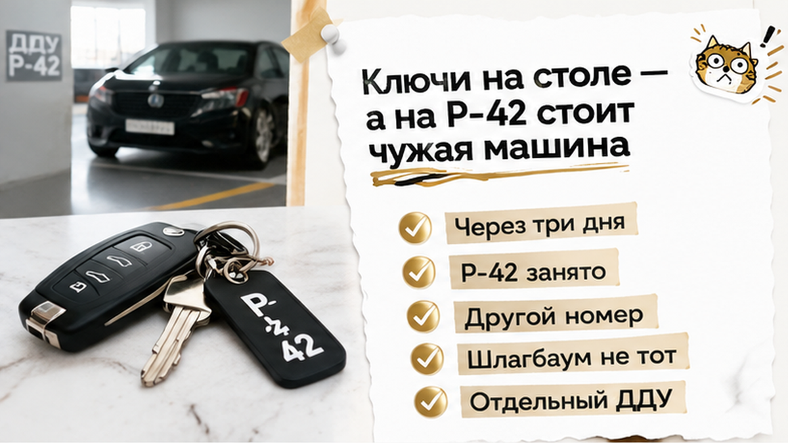
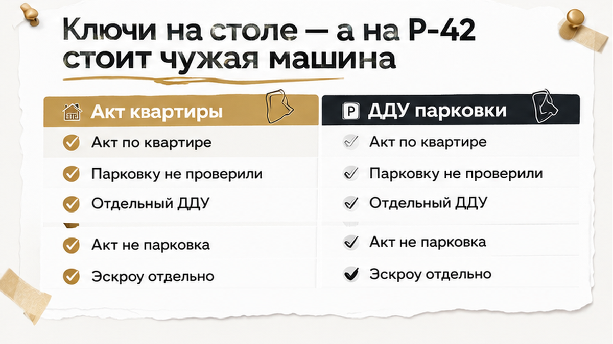
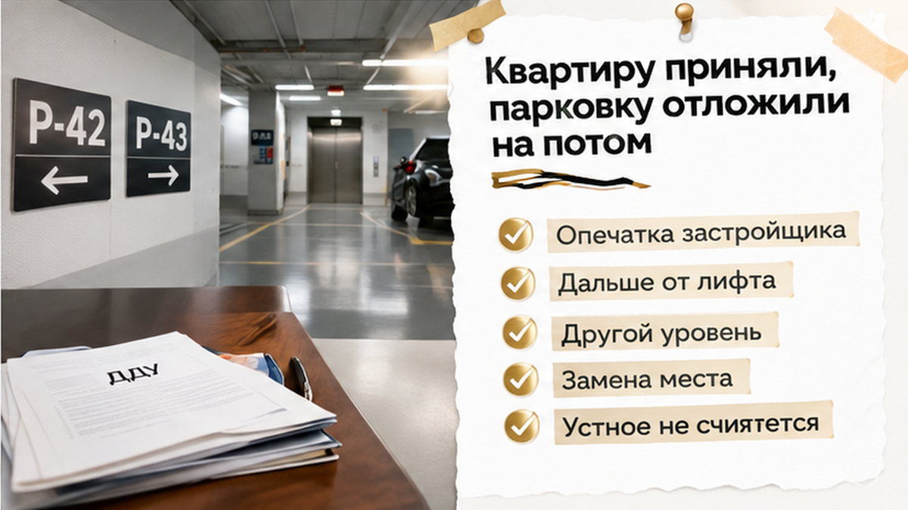
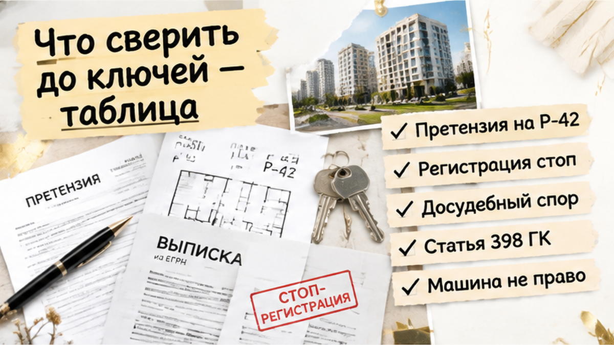

В Тюмени семья получила ключи от квартиры, а через три дня увидела на своём машино-месте P-42 чужую машину. На стене был другой номер, а шлагбаум открывался человеку, который пользовался другой парковкой. Квартиру покупатели уже приняли, но машино-место шло по отдельному ДДУ и должно было передаваться как самостоятельный объект. В приложении к договору были указаны план, этаж подземного паркинга, площадь и назначение места. Застройщик назвал расхождение «опечаткой» и предложил аналог дальше от лифта, но семью такая замена не устроила.
Разборы новостроек Тюмени и документов перед покупкой — в моих каналах: Telegram и MAX. Святослав Шакин, The Риэлтор, Тюмень.


В день выдачи ключей главным событием была квартира. Покупатели подписали акт по ней, а до подземного паркинга в тот день не дошли. Через три дня семья спустилась проверить место. На разметке P-42 стоял чужой автомобиль. Номер на стене отличался, и доступ через шлагбаум был выдан другому человеку.
Одна машина сама по себе ещё не доказывает, кому принадлежит недвижимость. Но здесь совпало сразу несколько тревожных деталей: договор указывал на один объект, обозначения на месте расходились, а пользоваться парковкой мог другой дольщик. Проверять нужно было уже не только разметку, но и документы, по которым место передавали.
Квартиру и машино-место покупали вместе, но юридически это были разные сделки: отдельный ДДУ на квартиру и отдельный ДДУ на машино-место. P-42 было определено в зарегистрированном приложении к договору на парковку. Деньги за него внесли на отдельный эскроу.
Покупатель рассчитывал получить не любую свободную площадку в подземном этаже, а конкретный объект, который можно сопоставить с планом договора. Этаж, площадь, назначение и расположение показывают, что именно должен передать застройщик. Если сведения на месте не сходятся, фраза «паркинг ведь построен» не отвечает на главный вопрос: где объект из подписанного ДДУ?

Квартиру передали, ключи оказались на столе, долгий этап ожидания закончился. Возникает ощущение, что закрыта вся сделка. Но исполнение каждого договора нужно проверять отдельно.
Акт по квартире не означает приёмку машино-места. Он также не подтверждает, что семья согласилась на другую нумерацию парковки или на любое место, которое застройщик предложит позднее.
По квартире прошла приёмка. По парковке требовалось отдельно проверить объект и оформить его передачу. Подпись под квартирным актом не превращает другое место в согласованную замену P-42. Поэтому важно смотреть, к какому договору относится каждый документ, а не только проверять наличие подписей в папке от застройщика.
Похожий разрыв между общей покупкой и отдельным объектом разобран в истории о кладовке по ДДУ, которой не оказалось на выдаче ключей. Здесь предмет спора другой — машино-место, — но принцип тот же: осмотр квартиры не заменяет проверку приложения и отдельного объекта.
Эскроу относится к расчётам по конкретному договору, но не заменяет сверку того, что именно покупатель должен получить. Похожая логика отдельных ДДУ и эскроу разобрана в материале о смене юрлица застройщика и новом ДДУ. Получение квартирных ключей не должно откладывать проверку парковки.
В ответ на несоответствие застройщик сказал: «Опечатка в приложении». И сразу предложил другое машино-место — дальше от лифта и на другом уровне.
Для менеджера это выглядело как простая замена номера. Для семьи — как предложение получить другой объект вместо P-42, который они выбрали и оплатили по отдельному ДДУ.
Слово «опечатка» само по себе ничего не меняет в договоре. Если меняются уровень паркинга, расположение и расстояние до лифта, это уже не исправление цифры на стене. Это замена машино-места.
Даже одинаковая площадь не делает два места равноценными. Важны путь до лифта, близость к выезду, возможность манёвра и положение на плане. Покупатель платил не за абстрактный квадратный метр подземного этажа, а за конкретный объект.
Односторонне заменить P-42 на «аналог» нельзя. Если семья согласна на другой вариант, условия нужно оформить дополнительным соглашением, а при необходимости зарегистрировать его. Устное объяснение отдела продаж не превращает новое место в согласованное.

Семья от предложенного места отказалась и направила претензию. Требование было конкретным: передать именно P-42. Застройщик продолжил настаивать на версии об опечатке и замене.
Регистрация права на машино-место не прошла: возник конфликт сведений и прав. Согласованной замены не было, право на парковку не оформили. Спор остался на досудебной стадии.
Из того, что регистрация не состоялась, нельзя сделать вывод, будто семья уже потеряла место или обязательно получит его через суд. При конфликте номеров возможны приостановка или отказ в регистрации, но точное основание нужно смотреть в документе Росреестра.
Для требования передать именно P-42 важна статья 398 ГК РФ. Она касается индивидуально-определённой вещи, пока та не передана третьему собственнику с зарегистрированным правом. Чужой автомобиль на месте и чужое право в ЕГРН — не одно и то же.
Поэтому проверять нужно не только машину в паркинге. Важны сведения о том, кто и когда оформлял документы, подписывал акт, фактически пользовался объектом и что указано в выписке ЕГРН по этому машино-месту.
Если право третьего лица уже зарегистрировано, спор может перейти к вопросам убытков, неустойки и расторжения договора. Но возврат денег не возникает автоматически. Эскроу по парковке связано с условиями именно её договора, а не просто с тем, что в этом же доме покупали квартиру.
Пока итог здесь не в пользу одной из сторон. Семья требует согласованный объект. Застройщик ссылается на опечатку и предлагает замену. Если выяснится зарегистрированное право другого человека, ипотека или существенная сумма спора, следующий шаг лучше определять по документам вместе с юристом.
Машино-место в приложении к ДДУ — такая же собственность, как квартира, или вы бы подписали акт без парковки, если ключи уже на столе?
С 1 января 2017 года машино-место — самостоятельный объект недвижимости. Его нельзя свести к фразе «паркинг в доме будет». До регистрации собственности у покупателя есть право требовать передачу конкретного объекта, который описан в договоре.
Зарегистрированный ДДУ и оформленное право собственности — разные этапы. Наличие договора подтверждает обязанность застройщика передать объект, но не означает, что любое место на подземном этаже подойдёт вместо согласованного.
Машино-место в приложении определяют не одним номером. Важны графическое расположение на плане, этаж, площадь, назначение и условный номер по проектной декларации. Именно весь набор сведений помогает понять, что покупатель оплатил и что ему должны передать.
Поэтому P-42 — не просто цифра, которую можно заменить другой табличкой. Если на плане одно расположение, а на месте — другое, меняется сам объект.
Я смотрю на такую сделку в три этапа: оплата, передача, регистрация. Деньги на эскроу подтверждают расчёты по конкретному договору, но не доказывают, что место передано. Похожая логика видна в истории, где ключи от новостройки перенесли, а деньги остались на эскроу.
Для парковки нужен собственный акт передачи. Акт по квартире не подтверждает, что семья приняла машино-место. Если объект не совпадает с приложением, это лучше зафиксировать письменно до подписи документов о передаче парковки.
Я, Святослав Шакин, The Риэлтор, Тюмень, начинаю проверку с документов, а не с обещания менеджера. Квартира и машино-место могут покупаться одновременно, но у них бывают разные ДДУ, отдельные условия эскроу и разные акты.
| Этап | Что сверить | Что делать при расхождении |
|---|---|---|
| До внесения денег | ДДУ и приложение: план, этаж, площадь, назначение и условный номер места; проектную декларацию на наш.дом.рф | Попросить исправить несоответствия в документах и не ограничиваться устным объяснением |
| Проверка расчётов | Есть ли отдельный ДДУ на парковку и какие условия эскроу предусмотрены именно для него | Не переносить условия квартирного договора на машино-место автоматически |
| После ввода дома | Сведения ЕГРН по конкретному месту и их соответствие договорному плану | Проверить идентификацию объекта и наличие зарегистрированных прав |
| Передача парковки | Расположение, номер на полу и стене, уровень паркинга и отдельный акт | Зафиксировать расхождение письменно; акт по квартире не считать приёмкой парковки |
| Предложение замены | Расположение нового места, доступ к лифту, выезду и условия манёвра | При согласии оформить дополнительное соглашение и необходимую регистрацию |
Эскроу не решает спор о том, какой объект должен быть передан. Условия возврата денег по парковке нужно читать отдельно: это не автоматическое продолжение квартирной сделки. Отдельный договор означает отдельную проверку его исполнения.
Разборы документов перед покупкой новостройки в Тюмени — в Telegram и MAX. Подписывайтесь, если хотите проверять условия до приёмки, а не разбирать расхождения после выдачи ключей.
До денег сверьте приложение к ДДУ: план, этаж, площадь, назначение и номер. До подписания квартирного акта не откладывайте проверку парковки только потому, что ключи уже на столе — акт по квартире не заменяет отдельный акт и выписку ЕГРН по машино-месту.